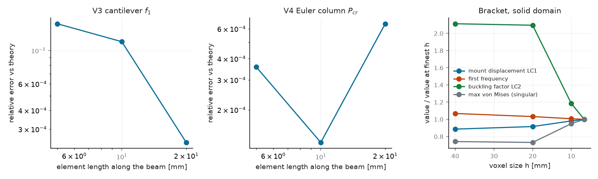
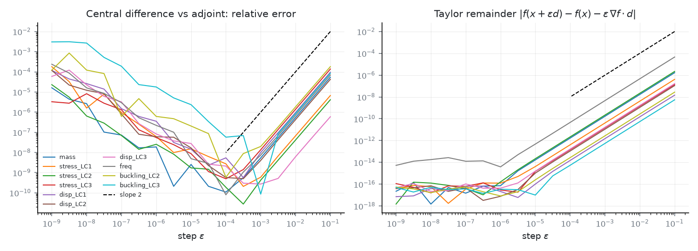
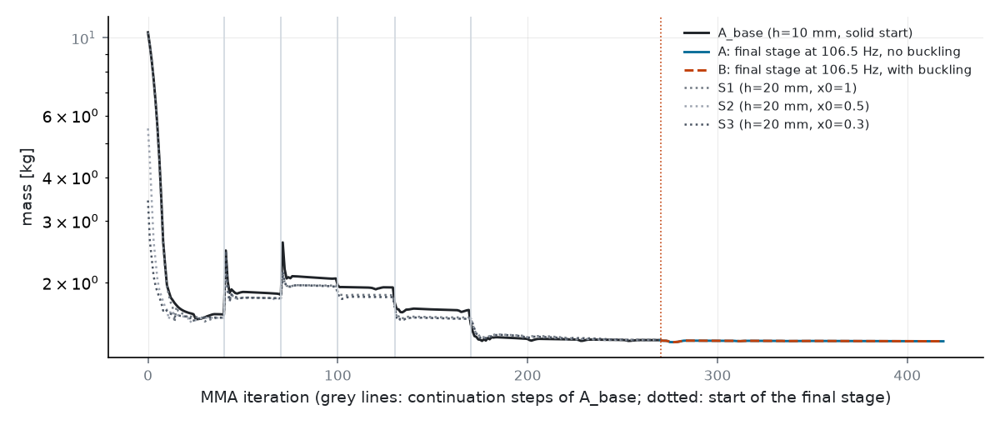
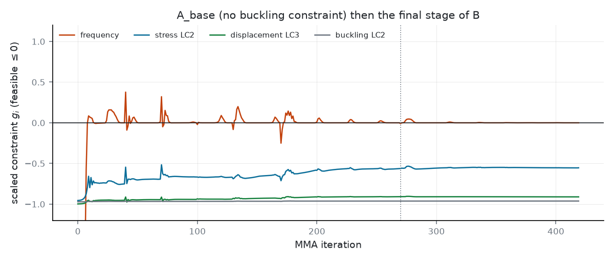
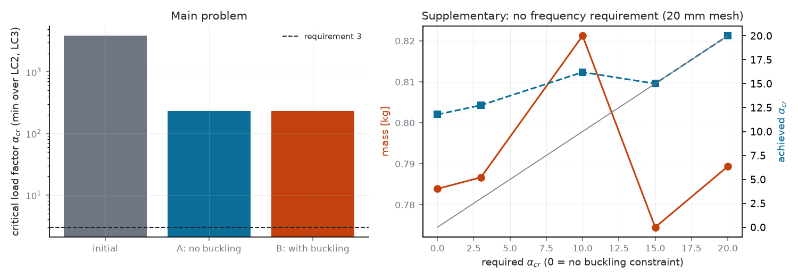
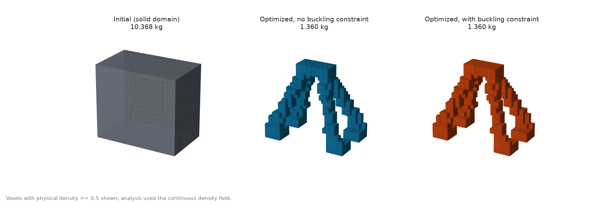
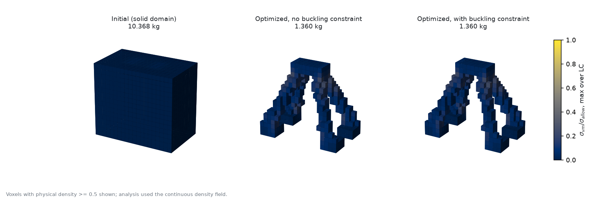
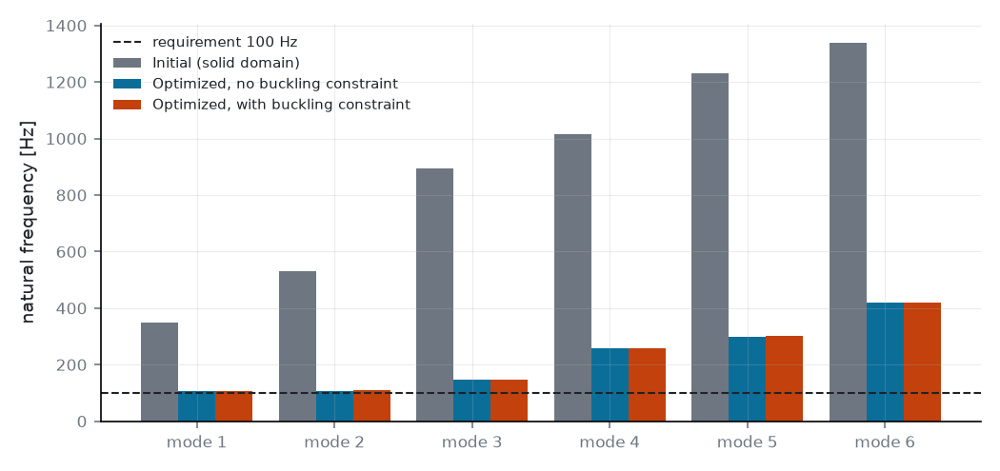

MAE 494/598 Design Optimization, Project 4 · Arizona State University
Minimum-mass engine-mount bracket: 3D topology optimization with frequency and buckling constraints
1 Summary
We designed an aluminium 6061-T6 bracket that holds a 120 kg engine at 3 g with a ±400 N·m torque reaction. We started from a solid 200×120×160 mm block (10.368 kg) and let a density-based topology optimization decide where material is needed. The final bracket weighs 1.360 kg. We wrote the finite-element solver, the gradients and the optimizer for this project, with heavy use of an AI coding assistant (section 10).
One requirement controls the design: the first natural frequency must stay above 100 Hz with the engine on the bracket. Stress and displacement have large margins. Linear buckling, our nonlinear component, never becomes active: with or without the buckling constraint we get practically the same bracket (1.360 vs 1.360 kg, \(\alpha_{cr}\approx\) 231.3).
The 10 mm voxels make the bracket look a little stiffer than it is. We found that out the hard way (section 10), so we now optimize to a slightly higher frequency target and check every candidate on a 5 mm mesh. We swept the target and picked the lightest design that keeps at least 1 Hz of margin on the 5 mm mesh: target 106.5 Hz, which gives 101.3 Hz there. Caveat: on a 6.67 mm mesh, which cannot represent the same voxel geometry exactly, the design gives 97.6–99.0 Hz, which is below the 100 Hz requirement. So the 100 Hz margin depends on the discretization by a few percent, and we have not shown mesh convergence (section 8).
Interactive 3D comparison
Initial: solid design domain
Hover or tap a voxel to inspect it.
The two cameras are linked, so dragging either pane turns both. At deformation ×0 the geometry is true size; otherwise the label gives the exaggeration. Displacements are interpolated across each voxel face with the element shape functions. Black dots are clamped bolt-pad nodes, the red arrow is the 3g engine load and the brown arrows are the torque couple. The display threshold only hides voxels; every number comes from the continuous density field that we analysed.
2 Structure and formulation
What the bracket has to do
The bracket ties an engine to the chassis. It has to carry inertial loads without yielding, keep the engine mount from moving much, keep its first natural frequency above the engine's excitation, and not buckle. We want it as light as possible. We did not have a real drawing, so the design domain, interfaces and loads below are our own modelling choices.
Coordinates. \(x\) runs along the bracket (0–200 mm), \(y\) across it (0–120 mm) and \(z\) up (0–160 mm). The base is at \(z=0\) and the engine sits on the top face at \(z=160\) mm.
| Item | Value | Source |
|---|---|---|
| Material | Al 6061-T6: E = 69 GPa, ν = 0.33, ρ = 2700 kg/m³, yield 276 MPa | Typical values, ASM Handbook Vol. 2 [21]. 276 MPa is a typical yield, not a design allowable (see limitations). |
| Design domain | 200 × 120 × 160 mm block of voxels | Our assumption |
| Supports | Four 40 × 40 mm bolt pads in the base corners. Every DOF of the bottom nodes in a pad is clamped, and the 20 mm above each pad is kept solid. | Our assumption (bolted joint treated as bonded) |
| Engine interface | 80 × 40 mm patch in the middle of the top face, with 20 mm of solid material below it | Our assumption |
| LC1 | Vertical 3 g: \(W = 3 \times 120 \times 9.81 =\) 3531.6 N downward, spread uniformly over the patch | Project brief (our assumption) |
| LC2, LC3 | LC1 plus or minus a 400 N·m torque about \(y\) (crankshaft along \(y\)), applied as a vertical traction that varies linearly along \(x\) | Project brief; we use both signs because the torque reverses between driving and coasting (our assumption) |
| Engine mass in the vibration analysis | 120 kg lumped on the interface nodes (translations only, area-weighted). We ignore the engine's rotary inertia. | Our assumption; putting the whole engine on one bracket is conservative |
| Bracket self-weight | Left out of the static load cases (under 0.1 % of \(W\) for the final design) | Our assumption |
How the torque is applied. On each interface node we put a vertical force \(f_i=-T\,(x_i-x_c)\,w_i/\sum_j w_j (x_j-x_c)^2\), where \(w_i\) is the node's area weight and \(x_c\) the patch centre. The forces are antisymmetric about \(x_c\), so they add up to zero net force, and their moment about the \(y\) axis is exactly \(T\). Check V5.T confirms 400 N·m.
Design variables
There is one density variable \(x_e \in [10^{-3}, 1]\) per voxel that is free to change: 3648 variables on the 10 mm mesh (3840 voxels minus the solid pads and interface). A voxel near the lower bound is effectively empty. The lower bound is not zero because the relaxed stress uses \(\bar\rho^{q}\) with \(q=1/2\), which has an infinite slope at zero. The density the structure actually "sees", \(\bar\rho\), comes from the filter and projection in section 3.
Optimization problem
\[ \min_{\mathbf x}\; m(\mathbf x)=\rho_0 V_e \sum_e \bar\rho_e(\mathbf x) \quad\text{s.t.}\quad g_i(\mathbf x)\le 0,\; i=1,\dots,9,\qquad 10^{-3}\le x_e\le 1 . \]We minimize mass. For the optimizer we divide it by the solid-block mass, and we write every constraint as a dimensionless \(g_i\le 0\):
\[ \begin{aligned} g_{\sigma,k} &= \frac{1}{\sigma_{allow}}\Big(\sum_{e}\sum_{\text{GP}}\big(\bar\rho_e^{\,q}\,\sigma_{vm}\big)^{P}\Big)^{1/P}-1, & k&=1,2,3, & \sigma_{allow}&=276/1.5=184\ \text{MPa}\\ g_{d,k} &= \frac{\lVert\bar{\mathbf u}_k\rVert}{d_{allow}}-1, \quad \bar{\mathbf u}_k=\textstyle\sum_{n\in\Gamma_{if}} w_n\mathbf u_{n,k}, & k&=1,2,3, & d_{allow}&=0.5\ \text{mm}\\ g_{f} &= 1-\mathrm{KS}_{\min}\big(\lambda_1/\lambda_{req},\dots,\lambda_6/\lambda_{req}\big), & \lambda_{req}&=(2\pi f_{design})^2 \\ g_{b,k} &= \mathrm{KS}_{\max}\big(\alpha_{req}\mu_{1,k},\dots,\alpha_{req}\mu_{4,k}\big)-1, \quad \mu=1/\alpha, & k&=2,3, & \alpha_{req}&=3 \end{aligned} \]In words:
- Stress (three constraints, one per load case). A p-norm (\(P=8\)) of the von Mises stress over every Gauss point. A p-norm is always at least as large as the true maximum, so keeping it under 184 MPa keeps every point under 184 MPa. \(\bar\rho^q\) is the stress relaxation explained in section 3.
- Displacement (three constraints). \(\bar{\mathbf u}_k\) is the area-weighted average displacement of the engine-interface nodes, which is how far the mount point moves. We take its full length, so all directions count.
- Frequency (one constraint). \(\lambda_i=\omega_i^2\) are the six lowest eigenvalues. \(\mathrm{KS}_{\min}\) is a smooth minimum that is always a bit below the true minimum (\(s=50\)) [9]. We use a smooth minimum because two modes can swap order or have the same frequency, and a plain "min" is not differentiable there [22].
- Buckling (two constraints, LC2 and LC3). \(\mu=1/\alpha\), and \(\mathrm{KS}_{\max}\) is a smooth maximum over the four largest \(\mu\). We do not need LC1: its prestress is the average of LC2 and LC3, and from the Rayleigh quotient \(\mu_1=\max_\psi \psi^T(-K_G^{(1)})\psi/\psi^TK\psi \le \max(\mu_2,\mu_3)\), so \(\alpha_{LC1}\ge\min(\alpha_{LC2},\alpha_{LC3})\).
Why the frequency target is above 100 Hz. The requirement is \(f_1\ge100\) Hz. Our first design, optimized to exactly 100 Hz on
the 10 mm mesh, only reached 94.8 Hz when we split every voxel into eight (commit 8189727). So the optimizer works with a target
\(f_{design}\) a few percent above 100 Hz. We swept that target (section 6) and the reported design uses \(f_{design}=\) 106.5 Hz.
Pass or fail in every table is still judged against 100 Hz.
All limits (184 MPa, 0.5 mm, 100 Hz, α ≥ 3, 3 g, 400 N·m) come from the project brief. They are our design assumptions, not code requirements. A factor of 1.5 matches the common aerospace ultimate factor [14 CFR 25.303]; here we apply it to typical yield as our own choice.
3 Analysis model
Governing equations
\[ \nabla\cdot\boldsymbol\sigma+\mathbf b=\mathbf 0 \text{ in }\Omega,\quad \boldsymbol\sigma=\mathbf C:\boldsymbol\varepsilon(\mathbf u),\quad \boldsymbol\varepsilon=\tfrac12(\nabla\mathbf u+\nabla\mathbf u^T),\quad \mathbf u=\mathbf 0 \text{ on }\Gamma_{pads},\quad \boldsymbol\sigma\mathbf n=\mathbf t_k \text{ on }\Gamma_{if}. \]This is 3D linear elasticity: equilibrium, Hooke's law and small strains, with the pads clamped and the engine loads on the top patch. The weak form is: find \(\mathbf u\) such that \(\int_\Omega \boldsymbol\varepsilon(\mathbf v):\mathbf C:\boldsymbol\varepsilon(\mathbf u)\,d\Omega =\int_{\Gamma_{if}}\mathbf v\cdot\mathbf t_k\,d\Gamma\) for every admissible \(\mathbf v\). After discretization this becomes \(\mathbf K\mathbf u_k=\mathbf F_k\).
For vibration we solve \(\mathbf K\boldsymbol\phi=\lambda\mathbf M\boldsymbol\phi\) with \(\lambda=\omega^2\) and mass-normalized modes (\(\boldsymbol\phi^T\mathbf M\boldsymbol\phi=1\)). For buckling we first solve the static problem, build the geometric stiffness \(\mathbf K_G\) from those stresses, and solve \((\mathbf K+\alpha\mathbf K_G)\boldsymbol\psi=\mathbf 0\). In the code this is the equivalent symmetric problem \((-\mathbf K_G)\boldsymbol\psi=\mu\mathbf K\boldsymbol\psi\) with \(\mu=1/\alpha\) [18, 19]. Stress is positive in tension, so compression makes \(-\mathbf K_G\) positive and gives \(\alpha>0\).
Element
We use 8-node hexahedra with 2×2×2 Gauss points. A plain hex8 "locks" in bending: on our cantilever test (V2.b) it came out 33 % too stiff. So we added Wilson's 9 incompatible bubble modes with Taylor's correction [16, 17], which let the element bend, and condense them out inside each element: \(\mathbf K_e=\mathbf K_{uu}-\mathbf K_{u\alpha}\mathbf K_{\alpha\alpha}^{-1}\mathbf K_{\alpha u}\). Taylor's correction keeps the patch test passing (V1). Stresses are taken at the Gauss points including the bubble modes. The mass matrix is consistent (the bubbles carry no mass). The geometric stiffness uses the Gauss-point stresses, \(\mathbf K_{G,e}=\sum_g \mathbf G_g^T\mathbf S(\boldsymbol\sigma_g)\mathbf G_g\,\det J_g\). Global matrices are SciPy sparse. One sparse LU factorization of \(\mathbf K\) is reused for all load cases, all adjoint solves and the shift-invert eigen-solves.
SIMP model, filter and projection
\[ \tilde\rho=\mathbf H\mathbf y,\quad H_{ej}\propto\max(0,r-\lVert\mathbf c_e-\mathbf c_j\rVert),\ r=30\ \text{mm};\qquad \bar\rho=\frac{\tanh\beta\eta+\tanh\beta(\tilde\rho-\eta)}{\tanh\beta\eta+\tanh\beta(1-\eta)},\ \eta=0.5 \] \[ E_K=E_0\big(\varepsilon+(1-\varepsilon)\bar\rho^{\,p}\big),\ \varepsilon=10^{-9};\qquad E_G=E_0\,\bar\rho^{\,p};\qquad m_{modal}=\bar\rho^{\,p}\frac{1+c}{\bar\rho^{\,p-1}+c},\ c=0.1^{\,p-1};\qquad \boldsymbol\sigma=\bar\rho^{\,q}\,\mathbf D_0\mathbf B\mathbf u,\ q=\tfrac12 \]What each piece does:
- Filter [3, 4]: each density is averaged with its neighbours within 30 mm. This sets a minimum member size that does not depend on the mesh and stops checkerboard patterns. \(\mathbf y\) is \(\mathbf x\) on design voxels and 1 on the solid pads and interface.
- Projection [5]: pushes the filtered density towards 0 or 1. Raising \(\beta\) makes the design crisper.
- SIMP stiffness [1, 2]: with \(p=3\), half-dense material gives only 1/8 of the stiffness for half the mass, so the optimizer avoids gray voxels. \(\varepsilon\) keeps \(\mathbf K\) invertible.
- Prestress for buckling uses \(E_G\) without the floor, so empty voxels carry no stress and cannot create fake buckling modes [6, 7].
- Modal mass: equal to the physical mass at 0 and 1, but it drops like \(\bar\rho^{p}\) near zero (a smooth version of Pedersen's fix [12, 13]). Otherwise nearly empty voxels have mass but almost no stiffness and give fake low-frequency local modes. The objective always uses the physical mass \(\bar\rho\).
- Stress relaxation with \(q<p\) [8, 10, 11]: without it, stress-constrained topology problems have "singular optima" that the optimizer cannot reach. We report the relaxed stress, which matches the true stress in fully solid voxels.
4 Verification
Before trusting the optimizer we checked the solver against problems with known answers. Each expected value is a closed-form formula
in src/verification.py, never the solver's own output. 34 of 34 checks pass.
Two notes on reading the table. V2.b is not a check of our element: it shows how badly the plain hex8 locks, which is why we use incompatible modes. The coarse V3/V4 rows have loose tolerances on purpose; they show the error shrinking, and only the finest mesh has to be within 1 %.
| ID | Test | Computed | Exact / reference | Error | Tolerance | Status | Note |
|---|---|---|---|---|---|---|---|
| V1.a1 | Patch test, interior displacement (incompatible) | 0.001528 | 0.001528 | 4.00×10-16 | 1.00×10-10 | ✓ pass | distorted 3x3x3 mesh, all nodes moved up to 20% of h; error = ||u-u_ex||/||u_ex|| |
| V1.a2 | Patch test, Gauss-point stress sigma_xx [Pa] (incompatible) | -6.31×107 | -6.31×107 | 1.36×10-15 | 1.00×10-10 | ✓ pass | error = max over all 216 Gauss points of ||sigma-sigma_ex||/||sigma_ex|| |
| V1.b1 | Patch test, interior displacement (plain hex8) | 0.001528 | 0.001528 | 3.39×10-16 | 1.00×10-10 | ✓ pass | distorted 3x3x3 mesh, all nodes moved up to 20% of h; error = ||u-u_ex||/||u_ex|| |
| V1.b2 | Patch test, Gauss-point stress sigma_xx [Pa] (plain hex8) | -6.31×107 | -6.31×107 | 9.73×10-16 | 1.00×10-10 | ✓ pass | error = max over all 216 Gauss points of ||sigma-sigma_ex||/||sigma_ex|| |
| V2.a | Cantilever tip deflection [m], mesh (20, 2, 2) | 0.004641 | 0.004638 | 6.25×10-4 | 0.005000 | ✓ pass | vs Euler-Bernoulli; Timoshenko 4.644638e-03 m, difference 8.7e-04 |
| V2.b | Cantilever tip deflection [m], mesh (20, 2, 2), plain hex8 | 0.003096 | 0.004638 | 0.332500 | 0.500000 | ✓ pass | expected to FAIL a tight tolerance: shear locking (33 % too stiff). Tolerance 0.5 only documents the size of the locking error; this is why incompatible modes are used. |
| V3.1 | Cantilever f1 [Hz], mesh (10, 1, 1) | 204.106387 | 204.156369 | 2.45×10-4 | 1.000000 | ✓ pass | consistent mass; finest mesh must be within 1 %, coarser rows show convergence |
| V3.2 | Cantilever f1 [Hz], mesh (20, 2, 2) | 203.922617 | 204.156369 | 0.001145 | 1.000000 | ✓ pass | consistent mass; finest mesh must be within 1 %, coarser rows show convergence |
| V3.3 | Cantilever f1 [Hz], mesh (40, 4, 4) | 203.848812 | 204.156369 | 0.001506 | 0.010000 | ✓ pass | consistent mass; finest mesh must be within 1 %, coarser rows show convergence |
| V3.p | Repeated pair: f2/f1 (square section) | 1.000000 | 1.000000 | 2.39×10-10 | 1.00×10-6 | ✓ pass | y and z bending are degenerate by symmetry |
| V3.m | Mass normalization max |phi^T M phi - 1| | 1.000000 | 1.000000 | 2.22×10-16 | 1.00×10-12 | ✓ pass | absolute error |
| V3.o | M-orthogonality max |phi_i^T M phi_j|, i != j | 1.11×10-15 | 0.000000 | 1.11×10-15 | 1.00×10-10 | ✓ pass | absolute error; holds inside the repeated pair too |
| V4.1 | Euler column P_cr [N], mesh (20, 1, 1) | 887.292290 | 886.722270 | 6.43×10-4 | 1.000000 | ✓ pass | fixed-free; finest mesh within 1 % |
| V4.2 | Euler column P_cr [N], mesh (40, 2, 2) | 886.608351 | 886.722270 | 1.28×10-4 | 1.000000 | ✓ pass | fixed-free; finest mesh within 1 % |
| V4.3 | Euler column P_cr [N], mesh (80, 4, 4) | 886.405394 | 886.722270 | 3.57×10-4 | 0.010000 | ✓ pass | fixed-free; finest mesh within 1 % |
| V4.p | Repeated pair: alpha2/alpha1 (square section) | 1.000000 | 1.000000 | 2.65×10-9 | 1.00×10-6 | ✓ pass | buckling about y and z is degenerate |
| V4.2 | Second mode ratio alpha3/alpha1 | 8.974368 | 9.000000 | 0.002848 | 0.020000 | ✓ pass | fixed-free modes scale as (2n-1)^2: second distinct mode = 9 P_cr |
| V5.1 | Free-free block: number of zero eigenvalues | 6.000000 | 6.000000 | 0.000000 | 0.000000 | ✓ pass | |lambda| < 1e-9 lambda_max; 7th/max eigenvalue ratio 8.41e-03 |
| V5.2 | Consistent mass: 1x^T M 1x [kg] | 0.016200 | 0.016200 | 4.28×10-16 | 1.00×10-12 | ✓ pass | equals rho V for a rigid translation |
| V5.sK_e | Symmetry ||A - A^T||/||A||, distorted K_e | 2.22×10-16 | 0.000000 | 2.22×10-16 | 1.00×10-13 | ✓ pass | absolute |
| V5.sM_e | Symmetry ||A - A^T||/||A||, distorted M_e | 6.58×10-17 | 0.000000 | 6.58×10-17 | 1.00×10-13 | ✓ pass | absolute |
| V5.sK_G,e | Symmetry ||A - A^T||/||A||, distorted K_G,e | 1.05×10-16 | 0.000000 | 1.05×10-16 | 1.00×10-13 | ✓ pass | absolute |
| V5.pd | Element mass positive definite: min eigenvalue > 0 | 1.20×10-5 | 0.000000 | 0.000000 | 0.000000 | ✓ pass | min eigenvalue 1.200e-05 kg |
| V5.r | Rotation invariance: tip |u| after a random rotation [m] | 0.004643 | 0.004643 | 1.15×10-10 | 1.00×10-9 | ✓ pass | whole mesh and load rotated; magnitudes must not change. Tolerance 1e-9, not 1e-10: the rotated solve loses digits to cond(K) ~ 1e6 (first set at 1e-10, observed 1.2e-10) |
| V5.inv | Inverted element is rejected | 1.000000 | 1.000000 | 0.000000 | 0.000000 | ✓ pass | check_mesh raises ValueError |
| V5.eq1 | Bracket LC1: force + reaction balance | 2.86×10-14 | 0.000000 | 2.86×10-14 | 1.00×10-9 | ✓ pass | ||sum F + sum R|| / |W|; reactions from the global K u at the supports |
| V5.em1 | Bracket LC1: moment balance about the origin | 1.69×10-14 | 0.000000 | 1.69×10-14 | 1.00×10-9 | ✓ pass | normalized by W x domain length |
| V5.eq2 | Bracket LC2: force + reaction balance | 4.45×10-14 | 0.000000 | 4.45×10-14 | 1.00×10-9 | ✓ pass | ||sum F + sum R|| / |W|; reactions from the global K u at the supports |
| V5.em2 | Bracket LC2: moment balance about the origin | 4.59×10-14 | 0.000000 | 4.59×10-14 | 1.00×10-9 | ✓ pass | normalized by W x domain length |
| V5.eq3 | Bracket LC3: force + reaction balance | 4.11×10-14 | 0.000000 | 4.11×10-14 | 1.00×10-9 | ✓ pass | ||sum F + sum R|| / |W|; reactions from the global K u at the supports |
| V5.em3 | Bracket LC3: moment balance about the origin | 1.90×10-14 | 0.000000 | 1.90×10-14 | 1.00×10-9 | ✓ pass | normalized by W x domain length |
| V5.T | Applied torque about y [N m] (LC2 - LC1) | 400.000000 | 400.000000 | 0.000000 | 1.00×10-12 | ✓ pass | |
| V5.kg | Bracket K_G assembly vs generic element routine | 1.12×10-15 | 0.000000 | 1.12×10-15 | 1.00×10-12 | ✓ pass | max entry difference / max entry; this check caught a double factor E0 in development |
| V5.mb | Bracket solid-domain mass [kg] | 10.368000 | 10.368000 | 1.71×10-16 | 1.00×10-12 | ✓ pass |

Mesh convergence of the solid block
| h [mm] | elements | DOFs | mount disp. LC1 [mm] | f1 [Hz] | αcr LC2 | max σvm [MPa] | time [s] |
|---|---|---|---|---|---|---|---|
| 40.00 | 60 | 360 | 8.05×10-4 | 370.97 | 6921.0 | 4.19 | 0.3 |
| 20.00 | 480 | 2079 | 8.33×10-4 | 358.51 | 6864.6 | 4.14 | 0.3 |
| 10.00 | 3840 | 13923 | 8.92×10-4 | 349.86 | 3879.4 | 5.37 | 7.1 |
| 6.67 | 12960 | 44175 | 9.09×10-4 | 347.28 | 3276.7 | 5.65 | 54.1 |
Between the two finest meshes the first frequency changes by 0.74 % and the mount displacement by 1.83 %. The peak von Mises stress keeps rising (+5.3 % at the last step). That is expected: the clamped pad edges and the corners of the loaded patch are re-entrant corners, where linear elasticity predicts infinite stress. It is one reason we constrain an aggregate of a relaxed stress, and why we treat our stress numbers with care (section 10). The solid block's buckling factor does not converge either (6921 → 6865 → 3879 → 3277). A solid block has no slender member, so its lowest "buckling" mode is a local mode driven by the same corner stresses. All these values are about a thousand times the requirement, so they do not change any conclusion, but they are not a physical capacity.
5 Sensitivities
With thousands of variables, finite differences are far too slow (see the cost table below), so we use adjoint gradients. We follow the course's method (ii). JAX differentiates only small element-level functions: the Gauss-point stress measure, and the element term \(\boldsymbol\psi_e^T\mathbf K_{G,e}(\mathbf u_e)\boldsymbol\psi_e\). We assemble the global adjoint systems ourselves with SciPy sparse and solve them with the factorization of \(\mathbf K\) we already have. As a cross-check we also built method (i), a dense JAX version of the whole analysis differentiated end to end. We did not use any Jacobian-free shortcut.
Static responses (stress and displacement)
\[ \mathbf K\boldsymbol\lambda=-\Big(\frac{\partial g}{\partial\mathbf u}\Big)^T,\qquad \frac{dg}{d\bar\rho_e}=\frac{\partial g}{\partial\bar\rho_e}+\boldsymbol\lambda_e^T\frac{\partial\mathbf K_e}{\partial\bar\rho_e}\mathbf u_e =\frac{\partial g}{\partial\bar\rho_e}+E_K'(\bar\rho_e)\,\boldsymbol\lambda_e^T\mathbf K_e^{(1)}\mathbf u_e \]The idea in one line: differentiating \(\mathbf K\mathbf u=\mathbf F\) gives \(d\mathbf u=-\mathbf K^{-1}(d\mathbf K)\mathbf u\) (the loads do not depend on the design). Instead of computing \(d\mathbf u\) for every variable, we solve one extra system for \(\boldsymbol\lambda\) per constraint, and then each derivative is a cheap element-level product. Our six static constraints share one factorization, so all six adjoints are solved together.
Frequencies
\[ \frac{d\lambda_i}{d\bar\rho_e}=\boldsymbol\phi_{i,e}^T\Big(\frac{\partial\mathbf K_e}{\partial\bar\rho_e}-\lambda_i\frac{\partial\mathbf M_e}{\partial\bar\rho_e}\Big)\boldsymbol\phi_{i,e}, \qquad \frac{dg_f}{d\bar\rho_e}=-\sum_i w_i\frac{1}{\lambda_{req}}\frac{d\lambda_i}{d\bar\rho_e} \]Because the modes are mass-normalized, an eigenvalue derivative needs no extra solve at all: adding stiffness raises \(\lambda\), adding mass lowers it. The \(w_i\) are the KS weights. If two modes have the same frequency, their individual derivatives are not unique, but they get equal KS weights, and the weighted sum is the derivative of their sum, which is well defined [22]. Checks V3.p and V4.p show our solver handles such repeated pairs.
Buckling: why the prestress needs its own adjoint
\[ \frac{d\mu_i}{d\mathbf x}=-\boldsymbol\psi_i^T\frac{\partial\mathbf K_G}{\partial\mathbf x}\Big|_{\mathbf u}\boldsymbol\psi_i-\mu_i\boldsymbol\psi_i^T\frac{\partial\mathbf K}{\partial\mathbf x}\boldsymbol\psi_i -\mathbf c_i^T\frac{d\mathbf u}{d\mathbf x},\qquad \mathbf c_i=\frac{\partial}{\partial\mathbf u}\big(\boldsymbol\psi_i^T\mathbf K_G(\mathbf u)\boldsymbol\psi_i\big) \]Buckling depends on the stress from the static solution, and that stress changes when the density changes. So \(\mathbf K_G\) is not fixed: the last term tracks how the prestress moves. We handle it like the static case, with one extra adjoint solve per buckling constraint, \(\mathbf K\boldsymbol\lambda_b=\alpha_{req}\sum_i w_i\mathbf c_i\), which turns the term into \(+\boldsymbol\lambda_b^T(\partial\mathbf K/\partial\mathbf x)\mathbf u\). JAX gives \(\mathbf c_{i,e}\) element by element. If we had treated the prestress as constant, we would have dropped this term. The method (i) check below, which differentiates straight through the static solve, agrees with our gradient to round-off.
Filter and projection
\[ \frac{dg}{dx_j}=\sum_e \frac{dg}{d\bar\rho_e}\,\frac{d\bar\rho_e}{d\tilde\rho_e}\,H_{ej}\quad (\text{solid voxels: } d\bar\rho_e/d\tilde\rho_e=0). \]This is the chain rule back through the projection and the filter to the design variables.
Gradient checks
We compared our gradients with central differences at a random gray design (p = 3, β = 2, 20 mm mesh). We used a random unit direction, plus single voxels above a bolt pad, below the engine interface and in the middle of the domain. That is 40 comparisons, with a maximum relative error of 1.60×10-7 and a median of 2.42×10-9 (best step of each sweep; our tolerance is 10-5).
| Function | Adjoint ∇f·d (random d) | Central difference | Rel. error (random d) | Max rel. error, all 4 directions | Status (tol 10-5) |
|---|---|---|---|---|---|
| mass | -0.00205016 | -0.00205016 | 1.08×10-10 | 2.44×10-9 | ✓ pass |
| stress_LC1 | 2.17×10-4 | 2.17×10-4 | 2.07×10-10 | 7.02×10-9 | ✓ pass |
| stress_LC2 | 0.00234002 | 0.00234002 | 2.75×10-11 | 1.37×10-8 | ✓ pass |
| stress_LC3 | 4.83×10-4 | 4.83×10-4 | 4.95×10-10 | 3.32×10-9 | ✓ pass |
| disp_LC1 | 6.04×10-5 | 6.04×10-5 | 5.65×10-10 | 4.74×10-9 | ✓ pass |
| disp_LC2 | 1.28×10-4 | 1.28×10-4 | 5.00×10-10 | 2.65×10-8 | ✓ pass |
| disp_LC3 | 1.51×10-4 | 1.51×10-4 | 2.71×10-10 | 5.80×10-9 | ✓ pass |
| freq | 0.05384757 | 0.05384757 | 7.96×10-11 | 5.58×10-9 | ✓ pass |
| buckling_LC2 | 1.36×10-5 | 1.36×10-5 | 5.83×10-10 | 1.60×10-7 | ✓ pass |
| buckling_LC3 | 1.94×10-6 | 1.94×10-6 | 8.57×10-11 | 1.13×10-7 | ✓ pass |

How to read the plot: the central-difference error falls with slope 2 until round-off takes over below \(\epsilon\approx10^{-5}\). The Taylor remainder \(|f(x+\epsilon d)-f(x)-\epsilon\nabla f\cdot d|\) also falls with slope 2. That only happens if the gradient is correct; a wrong gradient gives slope 1.
Independent method (i) check
Here the whole analysis (filter, projection, dense assembly, jnp.linalg.solve, and Cholesky-reduced eigh for the
frequencies and buckling) is written in JAX and differentiated in reverse mode on the 40 mm mesh (53 variables). We compared every
gradient component:
| Function | Value, sparse (ii) | Value, dense JAX (i) | ||gii-gi||/||gi|| | cosine | Status |
|---|---|---|---|---|---|
| mass | 0.624327 | 0.624327 | 1.26×10-16 | 1.000000000000 | ✓ pass |
| stress_LC1 | -0.988844 | -0.988844 | 4.15×10-15 | 1.000000000000 | ✓ pass |
| stress_LC2 | -0.954181 | -0.954181 | 1.60×10-15 | 1.000000000000 | ✓ pass |
| stress_LC3 | -0.951467 | -0.951467 | 2.81×10-15 | 1.000000000000 | ✓ pass |
| disp_LC1 | -0.994440 | -0.994440 | 4.22×10-15 | 1.000000000000 | ✓ pass |
| disp_LC2 | -0.993524 | -0.993524 | 3.15×10-15 | 1.000000000000 | ✓ pass |
| disp_LC3 | -0.988731 | -0.988731 | 3.83×10-15 | 1.000000000000 | ✓ pass |
| freq | -2.518385 | -2.518385 | 8.92×10-13 | 1.000000000000 | ✓ pass |
| buckling_LC2 | -0.971675 | -0.971675 | 6.77×10-15 | 1.000000000000 | ✓ pass |
| buckling_LC3 | -0.971512 | -0.971512 | 1.15×10-14 | 1.000000000000 | ✓ pass |
Complete finite-difference gradient
Measured on the 20 mm mesh: the complete central-difference gradient (912 analyses for 456 variables, step 0.0001) took 343 s; the adjoint gradient of all ten functions, including the analysis, took 0.42 s (822× faster). Component-by-component agreement:
| Function | ||gadj-gFD||/||gFD|| | max |difference| | ||gFD|| |
|---|---|---|---|
| mass | 1.39×10-9 | 8.58×10-12 | 0.05537 |
| stress_LC1 | 5.13×10-9 | 1.20×10-11 | 0.00777 |
| stress_LC2 | 6.51×10-9 | 1.57×10-10 | 0.03695 |
| stress_LC3 | 6.08×10-9 | 2.35×10-10 | 0.04367 |
| disp_LC1 | 3.85×10-9 | 1.65×10-12 | 0.00233 |
| disp_LC2 | 3.70×10-9 | 5.82×10-12 | 0.00729 |
| disp_LC3 | 3.79×10-9 | 8.36×10-12 | 0.00706 |
| freq | 4.71×10-9 | 1.80×10-9 | 1.09397 |
| buckling_LC2 | 1.46×10-8 | 2.89×10-12 | 4.77×10-4 |
| buckling_LC3 | 1.24×10-8 | 3.02×10-12 | 5.08×10-4 |
Cost
| h [mm] | design variables n | DOFs | analysis [s] | analysis + all 10 gradients [s] | adjoint overhead [s] | central FD, 2n analyses [s] (estimate) | speed-up |
|---|---|---|---|---|---|---|---|
| 20 | 456 | 2079 | 0.39 | 0.47 | 0.08 | 360 | 762× |
| 10 | 3648 | 13923 | 8.08 | 8.40 | 0.32 | 58945 | 7016× |
All ten gradients cost roughly one extra solve per constraint, because the factorization is reused. So the adjoint cost grows with the number of outputs and the mesh size, not with the number of design variables. Central differences need two full analyses per variable.
6 Optimization
Algorithm. We use our own Method of Moving Asymptotes (MMA) [14, 15] in src/mma.py. It uses elastic variables (penalty
\(c=1000\)) so every subproblem has a solution, and solves the subproblem's dual with L-BFGS-B. We did not use SLSQP: it stores a dense
\(n\times n\) matrix and solves a dense QP every iteration, which is slow for \(n\) = 3648. A unit test checks our MMA on a small problem
with a known answer (\(\min\sum x\) s.t. \(\sum 1/x\le n\): optimum \(x=1\), multiplier 1).
Scaling. Variables are between 0 and 1, the objective is mass divided by the solid-block mass, and every constraint is a ratio to its limit minus one. So all numbers the optimizer sees are of order one.
Continuation. We do not start with the final penalty and projection; we raise them in steps, and reset MMA's asymptotes at each step. First a base design without the buckling constraint goes from the solid block through the stages below. Then each candidate restarts from that base design for the final stage. In every final stage the reported design must satisfy all smooth constraints to within 10-5. A stage stops when the largest design change drops below 5×10-4 while feasible, or at its iteration limit. The reported design is the last iterate if it is feasible, otherwise the lightest feasible iterate of the final stage; we keep both. A: best feasible iterate of the final stage (iteration 146). B: best feasible iterate of the final stage (iteration 148).
| Run | Stage | SIMP p | projection β | max MMA iterations | move limit |
|---|---|---|---|---|---|
| A_base | 1 | 2 | 1 | 40 | 0.1 |
| A_base | 2 | 2.5 | 1 | 30 | 0.1 |
| A_base | 3 | 3 | 1 | 30 | 0.1 |
| A_base | 4 | 3 | 2 | 30 | 0.1 |
| A_base | 5 | 3 | 4 | 40 | 0.1 |
| A_base | 6 | 3 | 8 | 100 | 0.03 |
| A, B and sweep (restart from A_base) | 7 | 3 | 8 | 150 | 0.015 |
Final-stage settings we tried
Our previous design (commit 4cfd53a) stopped with a stationarity residual of about 5 %. To improve convergence without changing the
engineering problem, we restarted from that design at the same 107 Hz target and changed one final-stage setting at a time
(studies/convergence_study.py). Each result was also checked on the 5 mm mesh:
| Case | Final-stage setting | iterations | mass [kg] | f1, 10 mm [Hz] | f1, 5 mm [Hz] | max g | stationarity | bound-sign | grayness | solid parts | reported iterate |
|---|---|---|---|---|---|---|---|---|---|---|---|
| E1_m015 | beta 8, move 0.015 | 150 | 1.3649 | 107.23 | 101.77 | -8.37×10-6 | 0.0079 | 0.0000 | 0.109 | 1 | last iterate |
| E2_m010 | beta 8, move 0.010 | 150 | 1.3644 | 107.22 | 101.79 | -9.06×10-6 | 0.0109 | 4.88×10-4 | 0.109 | 1 | best feasible iterate of the final stage (iteration 149) |
| E3_b16 | beta 16, move 0.015 | 150 | 1.1890 | 107.42 | 100.15 | -3.53×10-5 | 0.0285 | 0.0025 | 0.050 | 1 | best feasible iterate of the final stage (iteration 148) |
| E4_b16_32 | beta 16 then 32, move 0.015 | 150 | 1.1082 | 107.25 | 100.34 | -4.63×10-5 | 0.0592 | 0.0037 | 0.021 | 1 | best feasible iterate of the final stage (iteration 148) |
Based on this, the final stage in run_all.py uses p = 3, β = 8, move limit 0.015 and up to 150 iterations (sweep.polish_stages in config.yaml).


Design-target sweep and selection
We restarted from the base design at several frequency targets, with and without the buckling constraint, and checked every with-buckling
candidate on the 5 mm mesh. Our selection rule, written in run_all.py: take the lightest candidate whose 5 mm frequency is at least
100 + 1 Hz, which also passes stress and displacement on the 5 mm mesh, meets the smooth constraints to 10-5, has
\(\alpha_{cr}\ge3\), and is one connected piece containing all bolt pads and the engine interface. We keep a margin rather than taking a
design right at 100 Hz, because a design at exactly 100.0 Hz would fail with a slightly different mesh or solver tolerance.
| Target [Hz] | A mass [kg] | B mass [kg] | B f1, 10 mm [Hz] | B f1, 5 mm [Hz] | B p-norm, 5 mm [MPa] | B max σvm, 5 mm [MPa] | B disp., 5 mm [mm] | B αcr | B max g | B stationarity | B iterations | B time [s] | B grayness | B solid parts | Rule |
|---|---|---|---|---|---|---|---|---|---|---|---|---|---|---|---|
| 106 | 1.3550 | 1.3550 | 106.22 | 100.83 | 135.6 | 80.4 | 0.0538 | 227.4 | -1.60×10-5 | 0.0080 | 150 | 3148 | 0.109 | 1 | fails: refined freq |
| 106.5 | 1.3599 | 1.3599 | 106.72 | 101.30 | 134.3 | 80.3 | 0.0533 | 231.3 | -2.94×10-6 | 0.0098 | 150 | 3138 | 0.109 | 1 | selected |
| 107 | 1.3648 | 1.3647 | 107.22 | 101.80 | 133.7 | 80.1 | 0.0528 | 235.4 | -7.95×10-6 | 0.0091 | 150 | 3176 | 0.109 | 1 | ✓ pass |
| 107.5 | 1.3694 | 1.3695 | 107.72 | 102.29 | 133.1 | 79.5 | 0.0524 | 239.1 | -1.44×10-5 | 0.0071 | 150 | 3177 | 0.109 | 1 | ✓ pass |
Different starting designs
We also ran three uniform starting densities with the buckling constraint (S1–S3) and one no-buckling run (A_dev) on the 20 mm mesh, using the full continuation at the base target. The S1–S3 masses differ by 0.2 %, so the result does not depend much on where we start, although the topologies differ in detail (topology optimization has many local optima).
| Run | h [mm] | x0 | buckling | mass [kg] | f1 [Hz] | αcr | max g | iterations | time [s] | reported iterate |
|---|---|---|---|---|---|---|---|---|---|---|
| S1 | 20 | 1 | yes | 1.373 | 107.1 | 255.8 | 3.68×10-7 | 270 | 324 | last iterate |
| S2 | 20 | 0.5 | yes | 1.371 | 107.1 | 210.1 | -1.33×10-5 | 270 | 303 | last iterate |
| S3 | 20 | 0.3 | yes | 1.371 | 107.0 | 208.9 | -1.39×10-5 | 270 | 303 | last iterate |
| A_dev | 20 | 1 | no | 1.374 | 107.1 | 255.7 | 4.55×10-6 | 270 | 316 | best feasible iterate of the final stage (iteration 265) |
KKT conditions and shadow prices
We use \(g_i(\mathbf x)\le 0\), \(L=f+\sum_i\lambda_i g_i\) and \(\lambda_i\ge0\). We do not just trust the optimizer's "converged" message. At the final design we estimate the multipliers ourselves: for constraints with \(g>-0.01\), we solve a non-negative least-squares fit of \(\nabla f+\sum_i\lambda_i\nabla g_i=\mathbf 0\) over the variables that are strictly between their bounds. What is left of the gradient on the variables at a bound acts as the bound multiplier, and it must have the right sign (positive at the lower bound, negative at the upper bound). We compare our multipliers with MMA's own dual variables.
| Run | stationarity ||∇f + JTλ||/||∇f|| (free vars) | bound-sign violation | primal violation max(g,0) | dual feasibility λ ≥ 0 | complementarity max|λ g| | vars at lower bound | at upper bound | between bounds |
|---|---|---|---|---|---|---|---|---|
| A | 0.0093 | 7.64×10-4 | 0.000000 | yes | 4.17×10-8 | 3110 | 346 | 192 |
| B | 0.0098 | 6.93×10-4 | 0.000000 | yes | 1.45×10-7 | 3108 | 350 | 190 |
| Run | Near-active constraint | g at optimum | λ (NNLS stationarity) | λ (MMA dual) | approx. mass cost of a 1 % tighter limit [g] |
|---|---|---|---|---|---|
| A | frequency | 0.00941 | 0.04929 | 0.04952 | 10.2 |
| B | frequency | 0.00941 | 0.04936 | 0.04935 | 10.2 |
What the multipliers mean. \(\lambda_i\) is how much the scaled mass \(m/m_{solid}\) would drop per unit of relaxation of \(g_i\). Raising the frequency target by 1 % raises \(\lambda_{req}\) by about 2 %, so \(g_f\) goes up by about 0.02 and the mass goes up by about \(\lambda_f\cdot0.02\cdot m_{solid}\). The last column applies this to every near-active constraint. Buckling has a zero multiplier: at this design the stability requirement costs nothing. Stationarity for B is 0.010. It is small but not zero, so we call B a well-converged local design. We do not claim it is a proven optimum.
7 Nonlinear component: linear buckling (N1)
We linearize buckling about the static state of LC2 and LC3 (section 3), and the gradient includes the prestress term (section 5). Here are the designs without (A) and with (B) the constraint \(\alpha_{cr}\ge3\):

Main problem. Without the constraint the design already has \(\alpha_{cr}\) = 231.3; with it, 231.3. The constraint is inactive (zero multiplier), and the masses differ by -0.00 %, which is within the optimizer's path scatter. The reason: with a 120 kg engine, 100 Hz needs a lot of lateral stiffness, and the only way to get it is with stocky legs. Stocky legs do not buckle at three times the service load.
Extra study (20 mm mesh). We wanted to see when buckling does matter. So we removed the frequency requirement (as if the engine were on soft rubber mounts), which lets stress and displacement size the bracket, and then raised the buckling requirement. This is a side study, not our design case.
| Run | buckling requirement | mass [kg] | αcr | max stress p-norm [MPa] | max mount disp. [mm] | f1 [Hz] | near-active constraints |
|---|---|---|---|---|---|---|---|
| N | none | 0.784 | 11.78 | 184.0 | 0.500 | 13.2 | stress LC2, stress LC3, displacement LC2, displacement LC3 |
| NB | ≥ 3 | 0.787 | 12.75 | 184.0 | 0.500 | 11.9 | stress LC2, stress LC3, displacement LC3 |
| NB10 | ≥ 10 | 0.821 | 16.20 | 184.0 | 0.390 | 16.0 | stress LC2, stress LC3 |
| NB15 | ≥ 15 | 0.775 | 15.00 | 184.0 | 0.397 | 15.7 | stress LC2, stress LC3, buckling LC3 |
| NB20 | ≥ 20 | 0.789 | 20.01 | 184.0 | 0.346 | 16.2 | stress LC2, buckling LC2, buckling LC3 |
With neither frequency nor buckling constraints the design is 0.784 kg with \(\alpha_{cr}\) = 11.8, so buckling is still not critical at \(\alpha_{req}=3\). Requirements above that value do become active (see the last column), and the optimizer reshapes the compression members to meet them. The mass does not rise steadily with the requirement; some constrained runs end lighter than the unconstrained one. These are different local optima of a nonconvex problem, so differences of a few percent between these runs are path scatter, not the cost of stability.
8 Results
Every value below comes from re-analysing the final design on a fresh model (10 mm mesh, p = 3, β = 8). The stress p-norm is the constrained aggregate. "True max" is the largest relaxed von Mises stress at any Gauss point.
| Quantity | Initial (solid domain) | Optimized, no buckling constraint | Optimized, with buckling constraint | Limit |
|---|---|---|---|---|
| Mass [kg] | 10.368 | 1.360 | 1.360 | minimize |
| Stress p-norm LC1 [MPa] | 1.56 ✓ pass | 11.53 ✓ pass | 11.53 ✓ pass | ≤ 184.00 |
| Stress p-norm LC2 [MPa] | 8.20 ✓ pass | 82.11 ✓ pass | 82.00 ✓ pass | ≤ 184.00 |
| Stress p-norm LC3 [MPa] | 8.20 ✓ pass | 82.11 ✓ pass | 82.00 ✓ pass | ≤ 184.00 |
| True max von Mises (relaxed) [MPa] | 5.37 ✓ pass | 54.41 ✓ pass | 54.20 ✓ pass | ≤ 184.00 |
| Mount displacement LC1 [mm] | 8.92×10-4 ✓ pass | 0.01 ✓ pass | 0.01 ✓ pass | ≤ 0.50 |
| Mount displacement LC2 [mm] | 0.00 ✓ pass | 0.04 ✓ pass | 0.04 ✓ pass | ≤ 0.50 |
| Mount displacement LC3 [mm] | 0.00 ✓ pass | 0.04 ✓ pass | 0.04 ✓ pass | ≤ 0.50 |
| First natural frequency [Hz] | 349.86 ✓ pass | 106.73 ✓ pass | 106.72 ✓ pass | ≥ 100.00 |
| Buckling factor LC2 [-] | 3879.39 ✓ pass | 231.25 ✓ pass | 231.33 ✓ pass | ≥ 3.00 |
| Buckling factor LC3 [-] | 3879.39 ✓ pass | 231.25 ✓ pass | 231.33 ✓ pass | ≥ 3.00 |
| Frequencies 1-6 [Hz] | 349.9, 532.0, 892.8, 1014.0, 1231.1, 1339.2 | 106.7, 108.2, 145.9, 258.0, 300.1, 418.5 | 106.7, 108.3, 145.9, 258.0, 300.2, 418.7 | |
| Modes 1-6: engine translation axis (share of translation, engine share of modal mass) | 1: y (100 %, 97 %); 2: x (100 %, 97 %); 3: z (100 %, 94 %); 4: x (96 %, 0 %); 5: z (100 %, 2 %); 6: x (100 %, 1 %) | 1: y (100 %, 99 %); 2: x (100 %, 97 %); 3: z (100 %, 0 %); 4: z (100 %, 99 %); 5: x (100 %, 3 %); 6: y (100 %, 1 %) | 1: y (100 %, 99 %); 2: x (100 %, 97 %); 3: z (100 %, 0 %); 4: z (100 %, 99 %); 5: x (100 %, 3 %); 6: y (100 %, 1 %) | |
| Solid fraction (ρ ≥ 0.5) | 1.000 | 0.127 | 0.127 | |
| Grayness mean 4ρ(1-ρ) | 0.000 | 0.109 | 0.109 | |
| One analysis, all responses [s] | 7.21 | 6.31 | 6.35 | |
| Optimization wall time [s] | - | 3079 | 3138 | |
| MMA iterations | - | 150 | 150 |
Refined-mesh and other checks
| Check | mass [kg] | f1 [Hz] | αcr | max p-norm [MPa] | max σvm [MPa] | max mount disp. [mm] |
|---|---|---|---|---|---|---|
| 20 mm design (S1) re-analysed on the 10 mm mesh | 1.373 | 95.3 | 195.4 | 102.9 | 77.8 | 0.060 |
| Design B re-analysed on a 5 mm mesh (each voxel split in 8) | 1.360 | 101.3 | not computed | 134.3 | 80.3 | 0.053 |
| Design B on a 6.67 mm mesh (volume-overlap transfer) | 1.360 | 99.0 | not computed | 111.7 | 64.0 | 0.053 |
| Design B on a 6.67 mm mesh (nearest-voxel transfer) | 1.359 | 97.6 | not computed | 149.2 | 104.9 | 0.056 |
| Design B thresholded at ρ = 0.5 (0/1 design) | 1.321 | 129.2 | 366.5 | 48.5 | 39.4 | 0.028 |
| Reference: design B as analysed | 1.360 | 106.7 | 231.3 | 82.0 | 54.2 | 0.045 |
Mesh refinement. The frequency of an optimized design depends on the voxel size, because coarse voxels make thin, partly gray members too stiff in bending. The 20 mm design S1 gives 107.1 Hz on its own mesh and 95.3 Hz when every voxel is split into eight. Our design B gives 101.3 Hz on the 5 mm mesh (-5.1 %, ratio 1.054), so it still meets the 100 Hz requirement on the refined mesh. Stress (largest p-norm 134.3 MPa on the 5 mm mesh) and displacement keep large margins. We did not recompute buckling on the 5 mm mesh (about 105 degrees of freedom), but its margin on the 10 mm mesh is large.
The 6.67 mm check does not pass. The 6.67 mm grid does not line up with the 10 mm voxels, so we had to transfer the densities somehow. Averaging by volume overlap keeps the total volume but turns boundary voxels gray: 99.0 Hz. Taking the density of the coarse voxel at each fine voxel's centre keeps the boundaries crisp but moves member faces by up to a third of a voxel: 97.6 Hz (mass 1.359 kg). Both are below 100 Hz, while the nested 5 mm mesh gives 101.3 Hz. We do not know which of these numbers is closest to the real bracket. What the spread does tell us is that the first frequency of this design moves by a few percent depending on how its voxel geometry is discretized, and our 1 Hz margin on the 5 mm mesh is smaller than that spread. So we can only say the design meets 100 Hz on the 10 mm and 5 mm meshes, not that it meets it independent of the mesh. A design for real use would need a larger margin, or optimization on a finer mesh, or a smooth CAD model re-analysed with a converged mesh.
Transfer between meshes. Splitting each 10 mm voxel into eight 5 mm voxels keeps the geometry exactly. A unit test checks that the transfer keeps the material volume and the passive pads and interface. It also checks, on both meshes, the support footprint (four 40 × 40 mm pads), the interface size, the total force, the 400 N·m torque and the 120 kg engine mass.
0/1 version. If we threshold B at ρ = 0.5, it weighs 1.321 kg and has f1 = 129.2 Hz. Removing the gray voxels, which add mass but little stiffness under SIMP, raises the frequency. We only use thresholding for this check and for the pictures.



9 Bonus: topology optimization
Our design variables let material disappear completely, so the bracket's layout, not just its sizes, comes out of the optimization. We used SIMP with penalty continuation, a 30 mm density filter (minimum member size, no checkerboards), projection to a crisp 0/1 field, stress relaxation against singular optima, and void-safe mass and prestress models. We compared the result with the unoptimized solid block and across mesh sizes. Since the base project is already a topology problem, the instructor will decide whether this counts toward the bonus.
10 Limitations, what we learned, and AI use
Limitations
- Linear elasticity and linear (eigenvalue) buckling only: no plasticity, no large deflections, no imperfections. Real thin members can buckle well below the linear estimate; here the margin is large.
- The bolt pads are bonded to the ground. We did not model bolts, contact, preload or slip. The loads are idealized tractions on a patch.
- Stress at the clamped pad edges and the patch corners is singular in linear elasticity (section 4), so the peak stress depends on the mesh. Our relaxed, aggregated stress is an engineering estimate, not a certification value.
- Voxel size 10 mm: surfaces are stair-stepped and the frequency depends on the mesh. The design meets 100 Hz on the 10 mm and 5 mm meshes (101.3 Hz at 5 mm) but gives 97.6–99.0 Hz on a 6.67 mm mesh (section 8). We have not shown mesh convergence, and the frequency margin is smaller than the mesh-to-mesh spread.
- Some gray density remains at member boundaries (see grayness in the results table); the thresholded check shows its effect.
- No fatigue (engine vibration is cyclic), no thermal loads, no manufacturing check. 276 MPa is a typical yield strength; a design-allowable (MMPDS) value would be lower.
- The engine is a lumped mass without rotary inertia; including it would lower the rocking modes.
- We did not compare against commercial FE software. Our evidence is the analytical checks and the independent method (i) gradients.
- Our MMA has no globally convergent safeguard (GCMMA), and topology problems have many local optima.
What we learned
- A gradient can pass a finite-difference check and still be the gradient of the wrong model. We only found our KG scaling bug by comparing two independent assemblies.
- Meeting a constraint on the optimization mesh is not the same as meeting it. Our first "feasible" design failed the 5 mm check by 5 %, and even after we added a margin, a third mesh (6.67 mm) still came out below 100 Hz. One refined mesh is not enough evidence.
- How a constraint is written matters as much as what it says. \(\lambda_{req}/\lambda_1-1\) and \(1-\lambda_1/\lambda_{req}\) allow the same designs, but MMA only behaved with the second one.
- In our problem the frequency requirement, not strength or buckling, decides the mass. Before running it we expected stress to matter more.
Things that did not work
- Starting the continuation at p = 1. Gray designs are too efficient at p = 1. MMA removed almost all the material in a few steps and could not recover, so we start at p = 2.
- Frequency constraint \(\lambda_{req}/\lambda_1-1\). It blows up as the design gets thin, and MMA oscillated with the constraint at +20. We switched to \(1-\mathrm{KS}_{\min}(\lambda_i/\lambda_{req})\), which allows the same designs.
- Optimizing to exactly 100 Hz on the 10 mm mesh. The design gave 94.8 Hz on the 5 mm mesh. This is why we now sweep the target and check every candidate.
- Quick runs with short stages. With only 10 iterations per stage, the side-study runs without the frequency constraint collapsed to empty designs. With full stages they converge.
- Crisper final designs. Raising the projection to β = 16 and then 32 (cases E3 and E4 in the convergence-study table) made the bracket much lighter on the 10 mm mesh. But those designs lost more frequency on the 5 mm mesh and converged worse. We chose the converged β = 8 design. The lighter route would need a higher frequency target and more iterations, and we did not have time to finish it.
- Running all 5 mm checks at once. Eight parallel workers each built a 5 mm model and the computer ran out of memory, which lost a 1-hour sweep. The 5 mm checks now run one at a time, and every optimization run is saved as soon as it finishes (
python run_all.py --resumereuses them).
AI-use statement
We used Claude Code (Anthropic) extensively to generate and revise code, tests, figures and report text from our project specification. This includes the solver, the sensitivities, the optimizer, the 3D viewer and this page. We checked the generated implementation using analytical verification cases, finite-difference gradient tests, an independent automatic-differentiation pipeline, mesh refinement and independent re-analysis. Bugs these checks caught during development:
- Geometric stiffness scaled twice by E0. The bracket's \(\mathbf K_G\) map already contained \(E_0\), and the interpolation multiplied by it again, so \(\alpha_{cr}\approx 0\). The finite-difference check passed because the error was self-consistent. Comparing with an independent element-by-element assembly (now check V5.kg) exposed it.
- Engine mass on the wrong DOFs in the method (i) check. The dense check sliced an already-reduced matrix a second time. Its frequency disagreed with
the sparse solver, and
scipy.linalg.eighon the sparse model's matrices showed the sparse solver was right. - YAML read
69.0e9as text (YAML 1.1 needs a sign in the exponent). The first test run failed; the config now uses69.0e+9. - Design infeasible on a finer mesh (above): caught by the refinement check, which is now part of
run_all.py. - KKT check crashed when no constraint was active. SciPy's
nnlswas called with zero columns and failed inside native code, which killed a worker process in a quick test run of the pipeline. The check now handles that case directly, and a unit test covers it.
Team and contributions
| Member | Contribution | Reviewed |
|---|---|---|
| TODO: name | TODO: contribution | TODO: FE analysis and verification (sections 3–4) |
| TODO: name | TODO: contribution | TODO: gradients (section 5) |
| TODO: name | TODO: contribution | TODO: optimization (sections 6–7) |
| TODO: name | TODO: contribution | TODO: website and 3D viewer |
Hardware and run time: Windows-10-10.0.26200-SP0, Intel64 Family 6 Model 186 Stepping 2, GenuineIntel, 16 logical CPUs, Python 3.11.9. The complete python run_all.py took 106 min.
To reproduce: pip install -r requirements.txt, python -m pytest -q, python run_all.py.
References
- Bendsøe, M.P. (1989). Optimal shape design as a material distribution problem. Structural Optimization 1, 193–202.
- Bendsøe, M.P., Sigmund, O. (2003). Topology Optimization: Theory, Methods and Applications. Springer.
- Bruns, T.E., Tortorelli, D.A. (2001). Topology optimization of non-linear elastic structures and compliant mechanisms. CMAME 190, 3443–3459.
- Bourdin, B. (2001). Filters in topology optimization. IJNME 50, 2143–2158.
- Wang, F., Lazarov, B.S., Sigmund, O. (2011). On projection methods, convergence and robust formulations in topology optimization. SMO 43, 767–784.
- Ferrari, F., Sigmund, O. (2019). Revisiting topology optimization with buckling constraints. SMO 59, 1401–1415.
- Gao, X., Ma, H. (2015). Topology optimization of continuum structures under buckling constraints. Computers & Structures 157, 142–152.
- Le, C., Norato, J., Bruns, T., Ha, C., Tortorelli, D. (2010). Stress-based topology optimization for continua. SMO 41, 605–620.
- Kreisselmeier, G., Steinhauser, R. (1979). Systematic control design by optimizing a vector performance index. IFAC Proceedings 12(7), 113–117.
- Cheng, G.D., Guo, X. (1997). ε-relaxed approach in structural topology optimization. Structural Optimization 13, 258–266.
- Duysinx, P., Bendsøe, M.P. (1998). Topology optimization of continuum structures with local stress constraints. IJNME 43, 1453–1478.
- Pedersen, N.L. (2000). Maximization of eigenvalues using topology optimization. SMO 20, 2–11.
- Du, J., Olhoff, N. (2007). Topological design of freely vibrating continuum structures for maximum values of simple and multiple eigenfrequencies and frequency gaps. SMO 34, 91–110.
- Svanberg, K. (1987). The method of moving asymptotes: a new method for structural optimization. IJNME 24, 359–373.
- Svanberg, K. (2007). MMA and GCMMA: two methods for nonlinear optimization. Technical note, KTH Stockholm.
- Wilson, E.L., Taylor, R.L., Doherty, W.P., Ghaboussi, J. (1973). Incompatible displacement models. In Numerical and Computer Methods in Structural Mechanics, Academic Press, 43–57.
- Taylor, R.L., Beresford, P.J., Wilson, E.L. (1976). A non-conforming element for stress analysis. IJNME 10, 1211–1219.
- Bathe, K.J. (2014). Finite Element Procedures, 2nd ed. Prentice Hall / K.J. Bathe.
- Timoshenko, S.P., Gere, J.M. (1961). Theory of Elastic Stability, 2nd ed. McGraw-Hill.
- Blevins, R.D. (1979). Formulas for Natural Frequency and Mode Shape. Van Nostrand Reinhold.
- ASM International (1990). ASM Handbook Vol. 2: Properties and Selection: Nonferrous Alloys and Special-Purpose Materials.
- Seyranian, A.P., Lund, E., Olhoff, N. (1994). Multiple eigenvalues in structural optimization problems. Structural Optimization 8, 207–227.
- Course specification: MAE 494/598 Project 4.
- 14 CFR 25.303, Factor of safety (U.S. Code of Federal Regulations, Title 14).